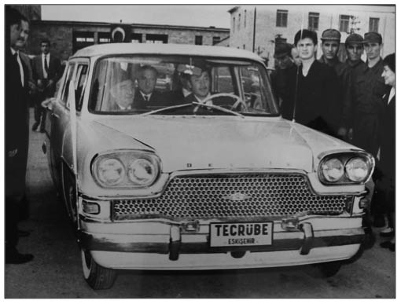

D
Demirel Üslubu (Eski cumhurbaşkanı ve başbakana ait sözler bütünü): Kitabımıza siyaset ve devlet adamı Süleyman Demirel, birçok ünlü söz hediye etmiştir. O kadar ki, siyasal edebiyata “Demirel mantığı” ile “Demirel üslubu” diye yeni bir akım getirdiği de söylenebilir.
İşte konumuzla ilgili olarak, onun birkaç ünlü sözü:
Köprü yapacağız dedikse, yarın yapacağız demedik ya (24.11.1965).
Küçük şeyler meydana gelirse, büyük şeyler meydana gelmiş olur (10.10.1966).
Sokağa dökülmekle hiçbir mesele hâlledilmez (09.06.1969).
Dış borçlar Türkiye’nin itibarını gösterir (18.08.1967).
Türkiye’yi tepesinden çekmek kâfi değil, altından kaldırmak daha müessirdir (18.03.1969).
Bir Türkiye’ye, bir Türkiye daha ekledik (28.06.1969).
(Aktaran: Nail Güreli, Yıllarboyu Tarih, sayı: 3, Haziran 1978, s.25)
Bunların dışında Demirel’in söylediği iddia edilen en ünlü söz ise “70 sente muhtaç olmak” şeklinde ifade edilebilir. Oysaki cümlenin orijinali “Yetmiş sente muhtaç olduğumuz şu günlerde hacı adaylarımıza 70 milyon dolar
ayırdık” (09.11.1977) şeklindedir. Bu 1980 öncesi Türkiye’nin içinde bulunduğu ekonomik durumu anlatmak için kullanılan bir benzetmeydi. Demirel, “70 sent bulmak için müşkülat çekiyoruz” sözünü Türkiye’nin 1970’lerin kriz yıllarında yaşadığı döviz darboğazını ve dış ticaret açığındaki artışı anlatmak üzere kullanmıştı. Siyasi baskılarla hac için Suudi Arabistan’a gideceklere 70 milyon dolar ödenmişti. Bu ifade 70 sent olmadığı için değil, 70 milyon dolar ödenebildiği için söylenmişti.
Fakat bu konu yıllarca siyasi istismara konu oldu. 1980 sonrası Başbakan Turgut Özal, geçmişi karalamak ve kendi dönemini övmek için ve biraz da kişisel husumet gibi nedenlerle bu sloganı sık sık kullanmıştır.
Kim ne derse desin Süleyman Demirel’in, siyasal ve ekonomik hayata önemli bir özdeyiş katkısı olmuştur. Türk siyasal hayatına 40 yılını vermiş olan Demirel’in adının ilk kez büyük tartışmalar içinde yer alması, 1970’lerin başına denk gelir. Zaten 1970 yılı, AP için önemli değişimlerin ve bölünmelerin yılı olmuştu. Ünlü “dosyalı muhalefet” kavramını ortaya atan Ethem Kılıçoğlu, AP Meclis Grubu’nda yaptığı konuşmada, “Benim bu sözümden alınanlar, menfaat şirketi üyeleridir” demekteydi. Ona göre, AP iktidarının doruklarında kişisel yarar sağlamaya yönelik kirli işler dönmekteydi. Parti içi muhalefetin ilk gövde gösterisi Ethem Kılıçoğlu ve Cevat Önder’in partiden ihraç edilmesi oldu. Bunu, altında 72 milletvekilinin imzası bulunan bir muhtıranın Demirel’e verilmesi izledi. Bu arada Günaydın gazetesi de, Demirel’e karşı çeşitli suiistimal iddialarını öne sürerek büyük bir kampanya başlatmıştı. Gazete, Demirellere son 3 yıl içinde devlet bankalarından 26 milyon lira kredi verildiğini ve verilen bu kredinin tek kuruşunun geri ödenmediğini belirtiyordu.
1970 yılı bütçe oylamasında 72’ler bir ölçüde bölünmüş olsa da, 41 AP milletvekili kendi partilerinin hazırladığı hü-kûmet bütçesine ret oyu verdi. Bunun üzerine Demirel’in başbakanlığındaki hükümet istifa etti. Yeni hükümeti kurma görevi tekrar Demirel’e verildi. Bu arada Demirel için TBMM Soruşturma Komisyonu kurulmuştu ve komisyona gelen Başbakanlık Yüksek Denetleme Kurulu Raporu da Demirel’i aklamıyordu. Bir süre sonra raporu hazırlayan komisyonun 8 üyesi görevlerinden alındı. 15 Mart, Meclis’in karar günüydü. Demirel, parti grubunda yaptığı konuşmada, “Ben Divan-ı Âli’den de, ötesinden de korkmam. Alnım açık yüzüm ak” demekteydi. 41’lerse Demirel’in güvenoyu alamayacağını düşünüyordu. Meclis, gergin bir havada toplanmıştı. Oylama sonucu, 41’ler adına üzücü, De-mirel için sevindiriciydi: Hükûmet, 172’ye karşı 232 oyla Meclis’ten güvenoyu almıştı. Yeni hükûmetin kurulması AP içindeki çatışmaları azaltmadı. Artık kılıçlar çekilmiş, parti içinde sert bir muhalefet dönemi başlamıştı.
Demirel, yeri geldiğinde “Verdimse ben verdim” demiştir. Niye mi? Anlatalım. İlkokul öğretmenlerine ucuz konut üretmek amacıyla kurulan İLKSAN (İlkokul Öğretmenleri Sağlık ve Yardım Sandığı), İstanbul Ömerli Bara-jı’nın su toplama havzasında yer alan ve bu nedenle imar izni bulunmayan 6 milyon metrekarelik arsayı, Tercüman gazetesi sahibi Kemal Ilıcak’ın aracılığıyla AY-BA şirketinden 346 milyar liraya satın almak için anlaştı. Ancak satış işleminin ilginç bir yanı da AY-BA şirketinin 346 milyar liraya satacağı arsanın henüz sahibi olmamasıydı. 1992’de 120 milyara arsayı satın alan şirket, arsanın ilk ödemesini de İLKSAN’dan avans olarak alınan 95 milyar liralık çekle yaptı. Bu arada İLKSAN’ın 346 milyarlık bir ödemeyi karşılayamayacağı yönündeki çekincesi, Yönetim Kuru-lu’nun, Kemal Ilıcak aracılığıyla Başbakan Demirel ile yaptıkları görüşmede giderildi. Demirel, arsa alımı için bütçeden 250 milyar lira aktarmak için söz verdi. İlk olarak
1993’te Maliye Bakanlığı, “arsa alımı” için İLKSAN’a devredilmek üzere Millî Eğitim Bakanlığı’na 10 milyar lira gönderdi. Bütçeden 50 milyar lira daha İLKSAN’a verilmek üzere Millî Eğitim Bakanlığı’na transfer edildi. Skandalın patlak vermesinin ardından paranın kim tarafından ödendiği sorusuna yanıt aranmaya başlandı. Dönemin Millî Eğitim Bakanı Köksal Toptan, ödemeyi kendisinin yapmadığını söylüyordu. Yapılan inceleme sonucunda ödeme emrinin altında, dönemin Devlet Bakanı Mehmet Ali Yılmaz’ın imzasının yer aldığı ortaya çıktı. Yılmaz’ın, Tunus ziyareti nedeniyle Toptan’a vekalet ettiği sırada Maliye Bakanı Sümer Oral’ın isteği üzerine ödeme emrini imzaladığı anlaşılıyordu. Yolsuzluk iddiasının gazetelerde yayımlandığı gün, arsayı satan AY-BA şirketi ile İLKSAN arasında yüzde 10-20 arasında bir komisyonla aracılık yaptığı ileri sürülen Kemal Ilıcak, beyin kanaması geçirerek hayatını kaybetti. Skandal dosyayla ilgili gelişmeleri izlediği hâlde sessizliğini koruyan Demirel, DYP Meclis Grubu’nda konuşarak kendini savundu. “Her şey benim bilgim dâhilinde oldu. Farz edin ki parayı ben verdim. Burada yanlış olan ne?” diyen Demirel’e verilen paranın devletin parası olduğu hatırlatılması üzerine Demirel bu kez, “Arsa almak istediler. Alın dedim. İşin böyle olduğunu bilmiyordum” yanıtını verdi. İlerleyen günlerde Demirel,
TBMM’de de aklandı.
Demirel’in söz ve davranışlarında zaman içinde meydana gelen çelişkileri kendine özgü bir izah tarzı vardır. Demirel bilinen ilk “ Dün dündür” açıklamasını, 1973 Cumhurbaşkanlığı seçimi sırasında yapmıştır. 5 Mart’ta seçimle ilgili olarak Genelkurmay Başkanı Semih Sancar’la görüşen, ancak görüşmediğini öne süren Demirel, San-car’ın 16 Mart günü durumu açıklaması üzerine görüştüklerini kabul etmek zorunda kaldı. Bunun üzerine gazetecilerin yapılan görüşmeyi neden gizlediği yönündeki sorularına Demirel’in verdiği yanıt, “Dün başkadır, bugün başka” biçimindeydi. Diğer taraftan aradan yıllar geçtikten sonra 1991 Seçimleri öncesinde İstanbul Sanayi Odası’nda yaptığı bir konuşmada, işadamlarına şu güvenceyi veriyordu: “Gelecekte, burada söylediklerim için ‘dün dündür’ demeyeceğim”. (aktaran Aslandaş-Bıçakçı, 1995, s. 83-84)
Her ne kadar Süleyman Demirel “dün dündür” sözünün sahibi olarak kabul edilse de, Halil Erdoğan Cengiz, Tarih ve Toplum dergisinde yayımlanan makalesinde aslında bu sözü ilk kullananın Sultan I. Ahmed olduğunu söylemektedir. Araştırmaya göre bu söz, XVII. yüzyılda Peçe-vi, Katip Çelebi ve Naima’nın, Hasan Beyzade’den naklettikleri cümlelerden anlaşıldığı kadarıyla Sultan I. Ahmed tarafından kullanılmıştı. Sultan Ahmed’in 1606 yılında söylediği sözler, “Dün dündür, bugün bugündür” sözünün günümüz diliyle anlatımından başka bir şey değildi. Şimdi asıl merak edilen konu, eski Cumhurbaşkanı Demi-rel bu sözü, kitaptan okuduktan sonra mı söyledi? Yoksa her iki lider de 360 yıl arayla birbirinden habersiz olarak mı kullandılar? Tarihçi Naima’ya göre de bu söz, “Dün söylediğimiz dünde kalmıştır, artık bizi bağlamaz. Geçmişe mazi, yenmişe kuzu derler” anlamında değildir. O, Sultan Süleyman dönemindeki durumun Sultan Ahmed döneminin toplum ve devlet yapısıyla bir olmadığını, bu yüzden aynı uygulamanın tekrarlanamayacağını belirtiyor. Koşulların değişmesi hâlinde, değerlendirmelerin, tutum ve icraatların da değişebileceğine inanıyor.
Derviş Yasaları (Kemal Derviş’in bakanlığı döneminde IMF’nin çıkartılmasını istediği yasaların genel adı): 2001 Ekonomik Krizi’nin derinleşmesi üzerine, Türkiye’ye davet edilen Dünya Bankası Başkan Yardımcısı Kemal Derviş, ekonomiden sorumlu devlet bakanlığına atandı ve yeni ekonomik program uygulamaya konuldu. Ancak adına küreselleşme denilen yeni dünya düzeninde, Türkiye’nin yeri tartışmalı bir hâldeydi. Türkiye’nin bir kez daha pazar olarak yabancı sermayeye açılması gerekiyordu. İktidarda olan koalisyonun gündeminde ise, Türkiye’nin uluslararası sermayenin direktiflerine ve egemenliğine biraz daha açılmasını sağlayacak yasaları çıkarmak vardı. Hükümet, “IMF Yasaları” olarak bilinen hukuksal düzenlemeleri gerçekleştirmede herhangi bir zorlukla karşılaşmadan, 14 Nisan 2001’de “Güçlü Ekonomiye Geçiş Programı”nda sayılan 15 yasayı ışık hızıyla Meclis’ten geçirdi. Böylelikle, 1923’ten itibaren oluşturulmaya çalışılan bağımsız iktisat politikalarına büyük önem veren yapılar, birer birer elden çıkarılmaya başlandı. Gelinen son aşamada, devlet hükümranlık yetkisinden vazgeçiyor ve sahnede de Tanzimat dönemi Batıcılığının son perdesi oynanıyordu. Tahkim tartışmaları ise gündemin bir başka maddesiydi. Uluslararası tahkimin yolunu açan ve uzun tartışmalara neden olan Anayasa değişikliği teklifi, Meclis’te rekor oyla kabul edildi. Tahkim ve özelleştirmeyi öngören bu değişiklikle, artık Türkiye’de yatırım yapacak olan yabancılarla devlet arasında yapılacak imtiyaz sözleşmelerinde ihtilaf çıkması hâlinde, sorunu iki tarafın birlikte belirleyeceği “yabancı hakem” çözecekti.
Devletçi Uygulama (Türklerin keşfettiği bir tür kalkınma modeli): 1929 Dünya Ekonomik Krizi Türkiye’de, hükümetin iktisat politikasında sanayileşmeyi hızlandırmaya yönelik yeni bir içerik oluşturmasını gerekli kıldı. 1930 yılı içinde, dünya buhranının etkileri ülkemizde de şiddetle yaşanmaya başladı. Serbest Fırka deneyimi ve ardından Gazi Mustafa Kemal’in çıktığı gezide edindiği izlenimler, iktisadi gelişmeyi hemen hızlandıracak bir şeyler yapılması gerektiğini ortaya koyuyordu. Öncelikle, Dünya Ekonomik Krizi’nin ancak sanayileşme sürecinin hızlandırılmasıyla aşılabileceği tespit edildi. 1929’u izleyen birkaç yıl içinde, hükümetin elinde, kamu kuruluşları aracılığıyla fabrikalar ve madencilik tesisleri kurmak ve işletmekten başka sanayileşmeyi hızlandırabilecek başka bir politika seçeneği olmadığı ortaya çıktı. Türkiye’nin, 1929 Dünya Ekonomik Krizi’nin etkisiyle devletçilik dönemine girmesinin ardından ilk fabrikalar devlet tarafından kurulmaya başlandı.
Devrim Başarısız Oldu! (1960’lara ait bir şehir efsanesi): Yıllardır halkımıza bu konunun söylendiği gibi gerçek olmadığı anlatılmasına rağmen Devrim otomobilinin başarısız olduğuna ilişkin görüşler hâlâ güncelliğini korumaktadır. Neden mi? İşte konunun ayrıntıları...
1961’de Ulaştırma Bakanlığı, Türkiye’ye has, tümüyle yerli bir otomobilin imal edilmesini istiyordu. O dönem böylesi bir projeyi ancak Devlet Demiryolları gerçekleştirebilirdi. Otomobilin Cumhuriyet Bayramı kutlamalarına yetiştirilmesi isteniyordu ve 23 mühendisin önlerinde sadece 129 gün vardı. 23 mühendis, geceyi gündüze katarak toplu iğnenin bile ithal edildiği bir ülkede Devrim otomobilini yoktan var edeceklerdi. Projenin merkezi olarak Eskişehir Cer Atölyesi, yani Tülomsaş seçilmişti. Gerçekten de Devrim otomobilleri tam zamanında yetişmişti. 29 Ekim günü biri bej, diğeri siyah renkli iki Devrim, Eskişehir’den Ankara’ya doğru trenle yola çıkarıldı. Buharlı lokomotiften sıçrayabilecek kıvılcımlara karşı önlem olarak da, arabaların benzin depoları boşaltıldı. Bu önlem, Dev-rim’in kaderini belirleyecek bir dizi talihsizliğin de başlangıcıydı. Tren Ankara’ya vardığında, depoların yeniden doldurulması planlanıyordu. Ancak işler planlandığı gibi yürümedi. Sabırsız bürokratların işgüzarlığı nedeniyle Devrim’ler depolarındaki son benzinle TBMM’nin önüne kadar getirildi. Cumhurbaşkanı Cemal Gürsel’in bindiği siyah Devrim, 200 metre ilerledikten sonra durdu; benzin bitmişti. Aslında bu aşamada sorun yok gibi gözüküyordu; Cumhurbaşkanı, arada deposu doldurulan bej renkli Devrim’le birlikte Ankara caddelerinde dolaşmış, Anıtkabir’e gitmiş, Hipodrom’daki geçit törenine katılmıştı. Ancak ertesi günün gazeteleri, ağız birliği etmişçesine sadece yolda kalan siyah Devrim’i ve Cumhurbaşkanı’nın “Batı kafasıyla otomobil yaptınız, Doğu kafasıyla benzin koymayı unuttunuz” sözünü anlatıyordu. “Devrim yolda kaldı”, “Devrim yürümedi”, “Devrim 200 metre gidebildi” manşetlerinin altında, milletin parasının boşa harcandığı yorumları yapılıyordu. Kimse geçit törenine katılan, Anıtkabir’e çıkan bej renkli Devrim’den bahsetmiyordu. Devrim, Türkiye’nin tümüyle yerli ilk otomobiliydi ve büyük haksızlığa uğramıştı. Çünkü özel sektör, otomotiv sanayiinde bir hamleye hazırlanıyordu. Bugün bej renkli Devrim, Eskişehir’de Cer atölyesinin hangarlarında hâlâ ustaları gezdirmeye devam ediyor.

Yıllardır gerçek olmadığını anlatan yazılar yazılmasına ve filmi yapılmasına rağmen, Türkiye’nin ilk otomobili Devrim’in başarısız olduğuna inanılmaktadır.
Dinci Kumanda (Pratik Türk zekâsının varacağı en son nokta): 1995’te Hürriyet gazetesinde çıkan bir haber hayli ses getirdi. Haberde, özel televizyonlar için dinci kumanda aletinin icat edildiği ileri sürülüyordu. Kumandanın en önemli özelliği, sadece dinci kanalları göstermesiydi. Çoluk çocuğuna açık saçık filmler göstermek istemeyen birileri için harika bir durumdu. Üstelik habere inandırıcılık katmak için, bu mucize aletin bir Konyalı tarafından icat edildiği belirtilmişti. Hürriyete göre, “Bir dönem TV izlemeyi bile günah sayan dinci kesim, kendilerine aykırı kanallara karşı, İslamcı kanalları ayarlayan bir kumanda aletiyle önlem alıyor”du. Bu uzaktan kumanda aleti sadece TGRT, Kanal 7 ve Samanyolu TV’yi gösteriyor, üstelik piyasada yerli ve hatta yabancı her türlü televizyona rahatlıkla takılıp kullanılabiliyordu. Aktüel dergisinin 1995 Yıllığı’ndan okuduğumuz kadarıyla, Hürriyet gazetesi bununla da yetinmemiş ve vatandaştan da görüş alınması ihmal edilmemişti.
Gazete haberin kaynağını karikatürist ve mizah yazarı Hasan Kaçan’a dayandırıyordu. Kaçan, sağın güçlü dergilerinden Aksiyon’daki köşesinde, espri olsun diye icat edilen “dinci kumanda”dan bahsetmişti. Haber gerçek değildi fakat Hürriyet’in olayı sahiplenmesi konuyu farklı bir sonuca götürmüştü. Bunun üzerine Kaçan, “Mesela Yani” şeklinde bir yazı yazarak, konunun gerçekle ilgisi bulunmayan bir konu olduğunu açıkladı. Ancak tesadüf müdür bilinmez, Yeni Şafak gazetesi bir “atlatma haber” daha verdi. O da “tesettür gözlüğü” icadı idi. Bu gözlük ile etrafta açık seçik gezinen kadınlar örtülü gözüküyordu. Fakat bu önemli haber, Hürriyet de dâhil hiçbir gazete tarafından ne yazık ki ciddiye alınmadı.
Doğan Görünümlü Şahin (Türklerin yarattığı bir otomobil klasiği): “Hacı Murat” gibi parlak Türk zekâsının önemli ürünlerinden biri daha. Daha donanımlı bir modele benzetmek için kullanılan bu terime göre To-faş’ın ürettiği “Kuş serisi” otomobillerinden biri olan Şahin bu benzetmeden nasibini aldı.
Dolmuş (Pratik Türk zekâsının, dünyaya kazandırdığı önemli bir inovasyon): 1929 Dünya Ekonomik Krizi’nin Türkiye için “teğet” geçmediği yıllarda bütün esnaf gibi taksiciler de kara kara düşünüyordu. Fakat çok geçmeden onların imdadına Aşçı Halit yetişti.
Bir süredir taksicilik yapmaya başlayan Aşçı Halit’in, kriz nedeniyle bazen siftah yapmadığı oluyordu. Sürekli müşterisi olan Musevi işadamı, işlerinin bozulduğunu ve artık taksiye binemeyeceğini söyleyince Halit, aynı yöne giden dört müşteriye ücreti paylaşmalarını önerdi. Bu önerinin kabul edilmesiyle, Nişantaşı-Eminönü dolmuş seferleri de başlamış oldu. Üstelik Halit günlük servisini yaptıktan sonra boş yatmak yerine, Karaköy İskelesi önüne gelip “5 kuruşa Taksim” diye müşteri avına çıkıyordu. Halit’in buluşunu, Civan Ali ve Saim Baba da izleyerek Türkiye’de dolmuşçuluğun resmî başlangıcına imza attılar. Kısa süre sonra Karaköy-Taksim hattına ek olarak Şişli-Pangaltı, Fatih-Beyazıt ve Sirkeci-Karaköy hatları da ortaya çıktı. Hatların oluşmasıyla dolmuş olarak kullanılan otomobiller de değişmeye başladı. Gelirini artırmak isteyen dolmuşçular, otomobillerinin ortasına bir sıra daha ekleterek yedi kişi alacak hâle getirdiler.
4 Ağustos Kararları (IMF’nin isteğiyle yapılan bir devalüasyon): Türk lirasının yaşadığı ilk büyük şok, 7 Eylül 1946 devalüasyonuydu. Aslında ekonomide bu devalüasyona neden olabilecek bir kötüye gidiş de yoktu. Hem dış ticaret hem de bütçe dengesinde fazla söz konusuydu. IMF’ye üye olmadan hemen önce yapılan bu devalüasyonun en önemli gerekçesi, artık kur artışlarının bu kuruluşa danışılarak yapılabileceği yeni döneme avantajlı girebilmekti. Ayrıca üzerinden fiyat ve miktar sınırlamalarının kaldırılacağı ithalatın çok fazla artması önlenmek istenmişti. Ancak, bu amaçlara ulaşılamadı. İzleyen dönemde hem ihracat hem de ithalat arttı. Ama ithalattaki artış daha yüksek olunca dış ticaret dengesi açık vermeye başladı. İkinci büyük devalüasyon ise birincinin tam tersine Türkiye’nin isteğiyle değil, 1958 yılında IMF’nin zorlamasıyla hayata geçti. Aslında devalüasyon gereği daha 1954’te ortaya çıkmıştı. Hükümet bu önlemi almakta isteksiz davranın-ca, ekonomi 1954-58 dönemini krizde geçirdi. Rezervlereriyip ithalat yapmak iyice imkânsız hâle gelince IMF’nin kapısı çalındı. 4 Ağustos 1958’de yapılan yüzde 221.4’lük devalüasyon üç yıllık bir gecikme ile olumlu sonuç vermeye başladı. Devalüasyondan sonra Türkiye, kısmen de olsa IMF desteğine kavuşmuştu, ancak bu da yeterli değildi. Ufukta Türkiye’yi kötü gelişmeler bekliyordu.
Döviz Kazandırmak (Yıllardır dillerden düşmeyen ekonomi geyiği): Yıllardır duyduğumuz bu söz, aslında bazı imtiyazları talep etme anlamı içeren tuhaf bir övünme konusudur. Aslında bu ifade bazı yanlışları da içinde barındırır. Çünkü kişilerin ülkeye kazandırdığı tek şey ödediği vergidir. Yeri geldiğinde özellikle turizimciler, “ülkeye şu kadar döviz kazandırıyoruz” sözüne sarılır. Oysaki onların yaptığı, ülkeye yani merkezi yönetime döviz kazandırmak değildir. Mal satarak kazandıkları paralar (TL ya da döviz) Maliye Bakanlığı’nın değil, turizmle uğraşanların kasasına girmiştir. “Ülkeye döviz kazandırıyoruz” söylemi, Almanya’da çalışan Türklerin, Türkiye’deki ailelerine para yollamaya başladığı yıllarda doğmuştu. O zaman da, “işçilerin yolladıkları dövizlerin çarçur edilmeyip ülkede fabrikalar kurulması” önerilmişti. Sanki yollanan dövizlerin Türk lirası karşılığını işçilerin aileleri yememiş veya işçiler bu paraları gayrimenkule ya-tırmamış gibi “Nerede ülkeye yolladığımız dövizler?” diye devletten hesap sormaya yeltenmişlerdi.
Fakat Türkiye’de inatla uygulanan “düşük kur” politikası yüzünden döviz kazandıran faaliyetler genellikle zarar ettiği için bu söz haklılık kazanmaktadır. Olumsuz şartlar altında gerçekten katma değer ihraç edenlerin takdir edilmesi gerekmektedir. Zaten kayıtlara bakılırsa ülkeye en çok dövizi mal ihracatçıları kazandırmaktadır.
Dövizi Sat, Bonoya Yat (Ekonomi tekerlemesi): Bankacılık sisteminin afyonu hâline gelen “Dövizi sat, bonoya yat” biçiminde ifade edilen bu sıcak para oyunuyla piyasalar 1990’lı yıllarda tanıştı. Aslında bu uygulama tasarruf miktarı yetersiz olan Türkiye’de ekonomide büyümeyi sağlamak ve kamu açıklarını kapatmak için başlatılmıştı. Nitekim döviz kuru belli bir seviyede tutulurken, yatırımcıya yüksek reel faiz verildi ve yurtdışından akan fonlarla Türkiye ekonomisi birkaç yıl üst üste büyüdü. Bu arada bu oyuna iç piyasadaki aktörler de dâhil oldu. Hem özel, hem de kamu kesimi yurtdışı borçlanmasını artırdı. Ama kamu açıklarındaki artışı durduracak hiçbir program uygulanmaması borçlanma ihtiyacını gittikçe tırmandırdı ve enflasyon tırmanışa geçti. 1993’ün ikinci yarısından sonra da dönemin hükümeti para politikasında önemli yanlışlar yapınca, 1994 Krizi’nin ilk sinyalleri belirmeye başladı.
Dün Dündür, Bugün Bugündür: (Bkz. Demirel Üslubu).
Düyunu Umumiye (IMF ile her zaman bağlantısı kurulan çokuluslu iflas masası): Osmanlı’nın son döneminde, alacaklı ülkelerin kurduğu çokuluslu iflas masası olarak bilinen Düyunu Umumiye, bir dönem Türkiyesi’ne damgasını vurdu. 1875’te mali iflasını tüm dünyaya ilan eden Osmanlı’nın bir anda bütün itibarı sarsılmıştı. Bu krize 1877-78 Osmanlı-Rus Savaşı’nın yükü de eklenince, ülke derin bir krizin içine sürüklendi. 1879’da başlıca alacaklılarla imzalanan anlaşma, mali krizin atlatılması için yeterli olmayınca son çare olarak, Osmanlı Devleti’nin gelirlerinin büyük bir kısmını kontrol altına alacak ve bir nevi haciz kurumu olarak işleyecek, Osmanlı dış borçlarını idare eden Düyunu Umumiye (Genel Borçlar İdaresi) kuruldu.
İlk borcunu Kırım Savaşı’nın maliyetlerini karşılamak için alan Osmanlı Devleti, mali durumunu düzeltemediği için savaştan sonra da borç almayı sürdürdü. Kısa sürede değil borçları, faizlerini bile ödeyemez duruma geldi. Rü-sum-ı Sitte İdaresi faaliyete geçtiyse de, bu idare şekli Avrupalı alacaklıları memnun etmedi. II. Abdülhamid, içinde bulunduğu kötü durumun üstesinden gelebilmek için 1881’de İstanbul’da toplanan alacaklı devletlerin vekillerinin katıldığı komisyonun kararlarını onaylamak zorunda kaldı. “Muharrem Kararnamesi” ile vergileri toplama ve alacaklılara ödeme görevi, Düyunu Umumiye İdaresi’ne verildi. İdarenin el koyduğu gelirler zamanla çoğaldı. Başlangıçta 2 milyon 5022 bin Osmanlı lirası tutarındaki geliri kontrol eden kurum, 1911-12’de 8 milyon 258 bin lirayı kontrol etmekteydi. Bu tarihte bütün devlet gelirlerinin yüzde 31,5’i Düyunu Umumiye’nin elindeydi. Yalnız tütün, tuz vs. gibi dolaylı vergiler değil, dolaysız vergilerin yüzde 22,9’u da bu kurumun kontrolündeydi.
Düyunu Umumiye’nin kurulmasından sonra çok sayıda Avrupa firması İstanbul’a yerleşerek kurdukları şirketlerle, Türkiye’de faaliyet göstermeye başladılar. Düyunu Umumiye, zamanla gelişerek her yana uzandı. 1911’de Maliye’deki 5 bin 472 çalışana karşılık, Düyunu Umumi-ye’de 8 bin 931 memur çalışıyordu. Tarihçi Ortaylı’nın, Osmanlı ülkesindeki “beynelmilel haciz memuru” olarak tanımladığı Düyunu Umumiye, etkin bir mali örgütlenme kurmuştu. Kurumun modern bir bürokratik örgüt ve kayıt sistemiyle çalıştığı ve mali teknikleri uyguladığı bilinir. Trajik olan husus, Osmanlı maliye örgütünün modern mali tekniklerle bu alacaklı kuruluş sayesinde yüz yüze gelmiş olmasıydı. Düyunu Umumiye, çağına uyum sağlayamayan Osmanlı maliye bürokrasinin tersine, gelirlerini toplama konusunda daha etkin çalışıyordu.